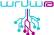

Համակարգչային ծրագիրը իրականացնում է առաջին համահայկական քաղաքացիական Համաժողովի
մասնակիցների
վիճակահանությունը՝ ապահովելով թափանցիկություն և հասարակության բոլոր շերտերի ներկայացվածություն։
Մարտի 10-12-ին կայանալիք Համաժողովը ունենալու է 100 մասնակից Հայաստանի Հանրապետությունից ու Արցախից և
100
մասնակից Սփյուռքից։
Ծրագրի ստեղծմանը մասնակցել են՝
-Առաջատար Տեխնոլոգիաների Ձեռնարկությունների Միությունը (UATE),
-Վարդենիսի ավագ դպրոցի «Արմաթ» ինժեներական լաբորատորիան (ArmathShine),
Ծրագրի ստուգումը իրականացրել է Հայաստանի Ամերիկյան Համալսարանը (AUA),
Վիճակահանության սոցիոլոգիական ընտրանքը կազմել է Breavis խորհրդատվական ընկերությունը:
